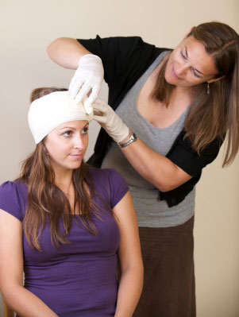
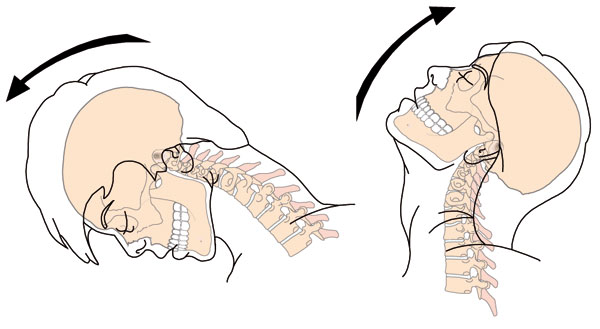
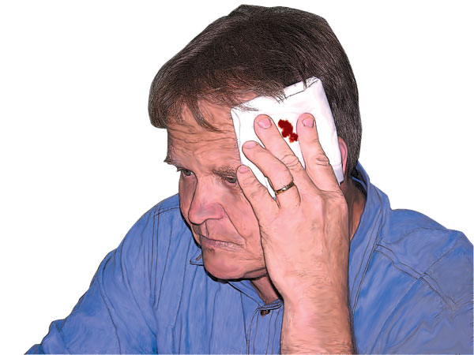
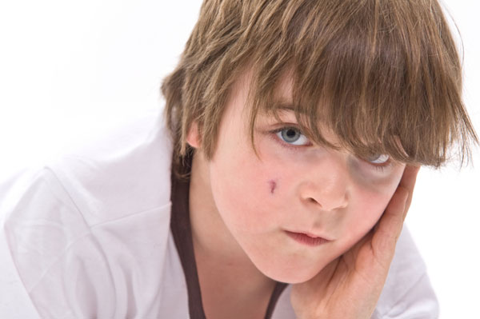

Head Injuries
Head Injuries
Injuries to the head are always regarded as serious because they can inflict damage to the brain and spinal cord as well as damaging the bone and soft tissue. As a result head injuries can be devastating to the casualty.
Head injuries can be invisible to the eye. In many instances, a casualty who appeared unaffected after an incident, suddenly collapses with life-threatening symptoms some hours later. This may be due to the sudden movement of the head forward and backward on impact which may cause a small bleed in the brain that eventually increases and applies excessive pressure on the brain tissue.
Such injuries can easily mislead the first aid provider by not exhibiting the expected signs and symptoms immediately after an incident.
As a first aid provider you should always take head injuries seriously. Always check the patient's response and whether they have any alteration of consciousness.
Look at the history of the incident and the mechanism of injury. If in your opinion, the patient's conscious state is altered or the incident had the potential to cause serious injury, assume the worst and treat as a serious head injury.

Flexion and Extension of the Neck
Head injuries are generally classified as:
 Open – a head injury with an associated head wound
Open – a head injury with an associated head wound
 Closed – with no obvious sign of injury
Closed – with no obvious sign of injury
In some instances, serious head injury is readily identified by certain signs peculiar to the injury.
Clear fluid oozing from the nose or ears. This is cerebro-spinal fluid (CSF), which surrounds the brain. When a fracture occurs, usually at the base of the skull, the fluid leaks out under pressure into the ear and nose canals.
'Black eyes' and bruising. The kinetic energy from a blow which is transmitted through the head and brain is expelled through soft tissue, eg the eyes, and behind the ears ('Battle's sign'). Bruising at these points indicates that the head has suffered exposure to considerable force.
Remember, just because a casualty has two black eyes (Raccoon eyes), this does not necessarily mean they were struck in the face. 'Raccoon eyes' may indicate a forceful impact elsewhere on the skull.
Blurred, or double, vision is common with concussed casualties. It indicates that the brain has been dealt a blow that has temporarily affected its ability to correctly process the sight senses.
Concussion is a closed head injury. Of all the head injuries, the severity of this is often underestimated, and many casualties have succumbed several hours after the incident. Be especially observant during contact sports or activities involving children – the myth that you can 'run off' your concussion by playing on is a dangerous attitude, and has caused grief to many players, parents and coaches when the casualty eventually collapses. Concussion is potentially very serious and an indifferent attitude is to be discouraged.
Facial injuries are also head injuries, and the first aid provider should not be unduly distracted by obvious facial injuries and forget to assess the casualty for associated brain injury. Facial injuries are also a complication where the airway is concerned.

Signs and Symptoms
Some, or all of the following:
 head wounds
head wounds
 deformation of the skull
deformation of the skull
 altered/deteriorating level of consciousness
altered/deteriorating level of consciousness
 evidence of CSF leaking from ears or nose
evidence of CSF leaking from ears or nose
 may have unequal pupils
may have unequal pupils
 headache
headache
 'raccoon eyes' or 'Battle's sign'
'raccoon eyes' or 'Battle's sign'
 nausea and/or vomiting
nausea and/or vomiting
 restlessness and irritability, confusion
restlessness and irritability, confusion
 blurred or double vision
blurred or double vision
 'snoring' respirations if unconscious
'snoring' respirations if unconscious

Care and Treatment
 call Triple Zero (000) for an ambulance
call Triple Zero (000) for an ambulance
 apply a cervical collar only if trained to do so
apply a cervical collar only if trained to do so
 treat any wounds
treat any wounds
 complete rest
complete rest
 if unconscious or drowsy, put casualty in the recovery position while supporting the cervical spine
if unconscious or drowsy, put casualty in the recovery position while supporting the cervical spine
 allow any CSF to drain freely – if in recovery position, put the injured side down with a pad over the ear to allow drainage
allow any CSF to drain freely – if in recovery position, put the injured side down with a pad over the ear to allow drainage
 DO NOT allow concussed casualties to 'play on'
DO NOT allow concussed casualties to 'play on'